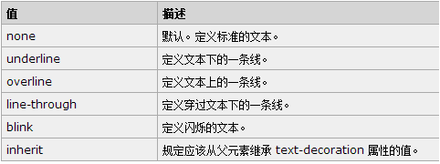
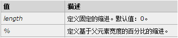
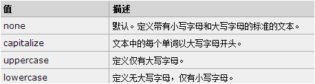
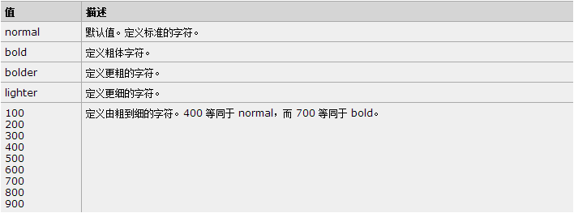

字符间距(letter-spacing:20px; letter-spacing:10em;1em=(font-size)px;)：
字体的行间距(行与行之间的距离)(line-height:20px;【企业级常用】 line-height:10%;line-height:2;【倍数间距】)：
“陕西十大怪”又称“关中十大怪”是指陕西中部的关中地区（西安、咸阳、宝鸡、渭南、铜川等市）出现的十种奇特民俗习惯。值得一提的是，“陕西十大怪”这一提法是不完全合理的。实际上“陕西十大怪”中的风俗仅出现在关中一带，在陕西的大部分地区并非如此。陕西省地理纬度跨度极大，从北至南存在陕北（黄土高原为主）、关中（渭河平原为主）、陕南（以秦岭以南的汉水流域为主）三大自然差异巨大的区域。以关中一地的风俗概括整个陕西，存在以点概面的概念缺陷，亦多表述为“关中十大怪”以去除歧义。
对齐文本(text-align:center/left/right)：
注意：10px=1em 将原来的px数值除以10，然后换上em作为单位就ok
装饰文本
上划线
中划线
下划线
闪烁线
原价：￥1688 现价：￥688
<del>标签也可以展示line-through样式的效果太好了
对文本进行缩进(将段落的第一行进行缩进)
“陕西十大怪”又称“关中十大怪”是指陕西中部的关中地区（西安、咸阳、宝鸡、渭南、铜川等市）出现的十种奇特民俗习惯。值得一提的是，“陕西十大怪”这一提法是不完全合理的。实际上“陕西十大怪”中的风俗仅出现在关中一带，在陕西的大部分地区并非如此。陕西省地理纬度跨度极大，从北至南存在陕北（黄土高原为主）、关中（渭河平原为主）、陕南（以秦岭以南的汉水流域为主）三大自然差异巨大的区域。以关中一地的风俗概括整个陕西，存在以点概面的概念缺陷，亦多表述为“关中十大怪”以去除歧义。
控制文本的大小写

首字母大写： my name is fengxiaolaing ! i have a dream!
定义仅有大写字母： my name is fengxiaolaing ! i have a dream!
无大写字母： MY Name is fengxiaolaing ! i have a dream!
css属性定义 <1> 文本的大小（font-size） ; <2> 字体系列 （font-family）; <3> 字体风格（font-style：normal / italic / oblique）;
/*默认加粗 bold === 700*/
.bold{font-weight:bold;}
/*更粗*/
.bolder{font-weight:bolder;}
/*更细*/
.lighter{font-weight:lighter;}
/*自定义大小*/
.auto{font-weight:900;}
CSS 表格样式： <1> 表格边框（border） ; <2> 折叠边框（border-collapse:collapse;）; <3> 表格宽度和高度 （width ，height）; <4> 表格文本对齐（text-align）; <5> 表格内边距 （padding）; <6> 表格颜色 ;
| Arry老师精英超级特战班级通讯录 | |||||
| 编号 | 姓名 | 性别 | 年龄 | 婚否 | 操作 |
| 001 | 小枫 | 女 | 18 | 已婚 | 删除 |
| 002 | 邢亚鸽 | 女 | 20 | 未婚 | 删除 |
| 003 | 丸子 | 男 | 52 | 删除 | |
| 004 | 佐佑End | 女 | 40 | 已婚 | 删除 |
| 005 | 小漠 | 男 | 23 | 未婚 | 删除 |
| 006 | 傅丨遆 | 女 | 38 | 删除 | |